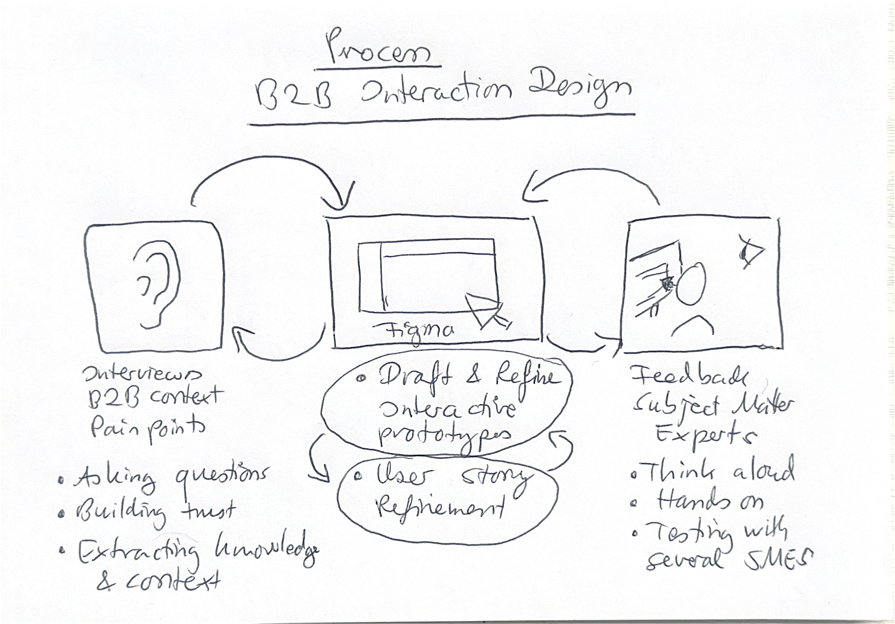

Aerospace teams needed to trace requirements across system hierarchies — who changed what, when — but had no usable interface for it, in a high-precision domain I didn't start out knowing.
As sole designer, I built high-fidelity interactive Figma prototypes for Master-Follower, the V&V Matrix, and Review Center end-to-end, drafting testable, traceable requirements with engineers in think-aloud sessions.
Prototypes secured a €100k+ development contract within six months; the features shipped and were extended in Altium 365 after the acquisition.
Role
Sole — and first — designer in an engineering-led aerospace company. Beyond shipping features, I established how design worked here: I founded a cross-functional UX Guild with engineering and led hiring for senior product design through a critical growth phase. As a non-domain expert, I used think-aloud sessions with systems engineers to turn unfamiliar territory into testable, traceable requirements.
Shipped
Shipped at Valispace (aerospace). Integrated into Altium 365 (electronics) post-acquisition.
Master-Follower in production
Creating a Master-Follower copy — from the Altium 365 public documentation.
Designing for a specialized domain

This approach isn't Valispace-specific; it draws on the NN/g course “Designing for Complex and Specialized Domains.”
What I learned
As a non-domain expert, asking fundamental questions was an advantage — it forced frequent, precise feedback from engineers and produced highly aligned, accurate designs. The work sharpened how I build trust, ask targeted questions, and use prototypes to refine domain knowledge: the same muscle I'd later apply at Apple, supporting professional audio and video users.